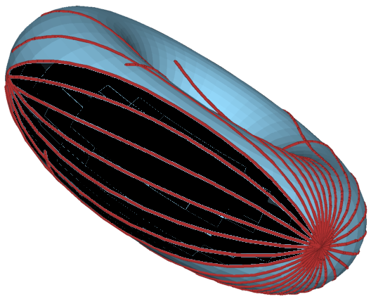

Convex but not Strongly Convex (1)
This should have been an example of a set which is convex but not strongly convex.[*]
However, it may be wrong. Once a set contains two points conjugate one to the other along the equator, then beyond the conjugate point there is no unique minimal geodesic.
On the other hand, if no conjugate point is in the set, then it is strongly convex...
[*] According to the definition given in Riemannian geometry - A modern introduction by Issac Chavel
Convex but not Strongly Convex (2)
In this MO question Will Jagy suggested the following set as an example of a set which is convex but not strongly convex. The surface is given by: y2=x3-3N2x2+3N4x, and the set is: A={(x,y,z)| y2+z2=x3-3N2x2+3N4x and x ≤ N2}. In the following visulaization I took N=2.2.
The Saddle
Here is the saddle surface with concentric geodesic discs. The distance scalar field was computed using the algorithm of Sethian & Kimmel Computing geodesic paths on manifolds, and the circles are the iso-lines of the field.
The Cat Schrödinger
The cat's model here was manually scanned and processed using JavaView and my implemented ideas. As this model is nothing but a point set without any additional information (like normals for example), it might not be a cat. But then again, maybe it is...As this "cat" weights about 3.2MB and contains ~51k vertices, please be patient with him.
The red vertices approximate the cut-locus of the marked vertex on the cat's neck.